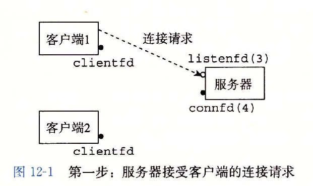

构造并发程序最简单的方法就是用进程，使用那些大家都很熟悉的函数，像fork,exec和waitpid。例如，一个构造并发服务器的自然方法就是，在父进程中接受客户端连接请求，然后创建一个新的子进程来为每个新客户端提供服务。
假设我们有两个客户端和一个服务器，服务器正在监听一个监听描述符(比如指述符3)上的连接请求。现在假设服务器接受了客户端1的连接请求，并返回一个已连接描述符(比如指述符4)，如下图所示。在接受连接请求之后，服务器

派生一个子进程，这个子进程获得服务器描述符表的完整副本。子进程关闭它的副本中的监听描述符3，而父进程关闭它的已连接描述符4的副本，因为不再需要这些描述符了。这就得到了下图中的状态，其中子进程正忙于为客户端提供
服务。
因为父、子进程中的已连接描述符都指向同一个文件表表项，所以父进程关闭它的已连接描述符的副本是至关重要的。否则，将永不会释放已连接描述符4的文件表条目，而且由此引起的内存泄漏将最终消耗光可用的内存，使系统崩溃。
现在，假设在父进程为客户端1创建了子进程之后，它接受一个新的客户端2的连接请求，并返回一个新的已连接描述符(比如描述符5)，下图所示。然后，父进程又派生另一个子进程，这个子进程用已连接描述符5为它的客户端提供服
务，
如下图所示。此时，父进程正在等待下一个连接请求，而两个子进程正在并发地为它们各自的客户端提供服务。

基于进程的并发服务器
首先，通常服务器会运行很长的时间，所以我们必须要包括一个SIGCHLD处理程序，来回收僵死((zombie)子进程的资源。因为当SIGCHLD处理程序执行时，SIGCHLD信号是阻塞的，而Linux信号是不排队的，所以SIGCHLD处理程
序必须准备好回收多个僵死子进程的资源。
其次，父子进程必须关闭它们各自的connfd副本。就像我们已经提到过的，这对父进程而言尤为重要，它必须关闭它的已连接描述符，以避免内存泄漏。
最后，因为套接字的文件表表项中的引用计数，直到父子进程的connfd都关闭了，到客户端的连接才会终止。
进程的优劣
对于在父、子进程间共享状态信息，进程有一个非常清晰的模型:共享文件表，但是不共享用户地址空间。进程有独立的地址空间既是优点也是缺点。这样一来，一个进程不可能不小心覆盖另一个进程的虚拟内存，这就消除了许
多令人迷惑的错误—这是一个明显的优点。
另一方面，独立的地址空间使得进程共享状态信息变得更加困难。为了共享信息，它们必须使用显式的IPC(进程间通信)机制。(参见下面的旁注。)基于进程的设计的另一个缺点是，它们往往比较慢，因为进程控制和IPC的开销很高。
针对这种困境的一个解决办法就是I/O多路复用(I/O multiplexing)技术。基本的思路就是使用select函数，要求内核挂起进程，只有在一个或多个I/O事件发生后，才将控制返回给应用程序，就像在下面的示例中一样:
.当集合中任意描述符准备好读时返回。
.当集合中任意描述符准备好写时返回。
.如果在等待一个I/O事件发生时过了限定时间，就超时。
select是一个复杂的函数，
select函数处理类型为fd_set的集合，也叫做描述符集合。逻辑上，我们将描述符集合看成一个大小为n的位向量:
b[n]，…,b[1],b[0]
每个位b[k]对应于描述符k。当且仅当b[k]=1，描述符k才表明是描述符集合的一个元素。只允许你对描述符集合做三件事:
1)分配它们，
2)将一个此种类型的变量赋值给另一个变量，
3)用FD_ ZERO, FD_ SET, FD_ CLR和FD_ ISSET宏来修改和检查它们。
针对我们的目的，select函数有两个输人:一个称为读集合的描述符集合(fdset)和该读集合的基数(n)(实际上是任何描述符集合的最大基数)。select函数会一直阻塞，直到读集合中至少有一个描述符准备好可以读。当且仅当一个
从该描述符读取一个字节的请求不会阻塞时，描述符k就表示准备好可以读了。select有一个副作用，它修改参数fdset指向的fd_set，指明读集合的一个子集，称为准备好集合(ready set)，这个集合是由读集合中准备好可以读了
的描述符组成的。该函数返回的值指明了准备好集合的基数。注意，由于这个副作用，我们必须在每次调用select时都更新读集合。
I/O多路复用技术的优劣
事件驱动设计的一个优点是，它比基于进程的设计给了程序员更多的对程序行为的控制。例如，我们可以设想编写一个事件驱动的并发服务器，为某些客户端提供它们需要的服务，而这对于基于进程的并发服务器来说，是很困难
的。
另一个优点是，一个基于I/O多路复用的事件驱动服务器是运行在单一进程上下文中的，因此每个逻辑流都能访问该进程的全部地址空间。这使得在流之间共享数据变得很容易。一个与作为单个进程运行相关的优点是，你可以利
用熟悉的调试工具，例如GDB,来调试你的并发服务器，就像对顺序程序那样。
最后，事件驱动设计常常比基于进程的设计要高效得多，因为它们不需要进程上下文切换来调度新的流。
事件驱动设计一个明显的缺点就是编码复杂。随着并发粒度的减小，复杂性还会上升。这里的粒度是指每个逻辑流每个时间片执行的指令数量
基于事件的设计另一个重要的缺点是它们不能充分利用多核处理器。
现代系统也允许我们编写一个进程里同时运行多个线程的程序。线程由内核自动调度。每个线程都有它自己的线程上下文(thread context)，包括一个唯一的整数线程ID(Thread ID, TID)、栈、栈指针、程序计数器、通用目的寄
存器和条件码。所有的运行在一个进程里的线程共享该进程的整个虚拟地址空间。
基于线程的逻辑流结合了基于进程和基于I/O多路复用的流的特性。同进程一样，线程由内核自动调度，并且内核通过一个整数ID来识别线程。同基于I/O多路复用的流一样，多个线程运行在单一进程的上下文中，因此共享这个进程虚
拟地址空间的所有内容，包括它的代码、数据、堆、共享库和打开的文件。
线程执行模型
多线程的执行模型在某些方面和多进程的执行模型是相似的。思考下图中的示例。每个进程开始生命周期时都是单一线程，这个线程称为主线程(main thread)。

在某一时刻，主线程创建一个对等线程(peer thread)，从这个时间点开始，两个线程就并发地运行。最后，因为主线程执行一个慢速系统调用，例如read或者sleep，或者因为被系统的间隔计时器中断，控制就会通过上下文切
换传递到对等线程。对等线程会执行一段时间，然后控制传递回主线程，依次类推。
在一些重要的方面，线程执行是不同于进程的。因为一个线程的上下文要比一个进程的上下文小得多，线程的上下文切换要比进程的上下文切换快得多。另一个不同就是线程不像进程那样，不是按照严格的父子层次来组织的。和
一个进程相关的线程组成一个对等(线程)池，独立于其他线程创建的线程。主线程和其他线程的区别仅在于它总是进程中第一个运行的线程。对等(线程)池概念的主要影响是，一个线程可以杀死它的任何对等线程，或者等待它的
任意对等线程终止。另外，每个对等线程都能读写相同的共享数据。
Posix线程
Posix线程(Pthreads)是在C程序中处理线程的一个标准接口。它最早出现在1995年，而且在所有的Linux系统上都可用。Pthreads定义了大约60个函数，允许程序创建、杀死和回收线程，与对等线程安全地共享数据，还可以通
知对等线程系统状态的变化。
创建线程
线程通过调用Pthread create函数来创建其他线程。pthread create函数创建一个新的线程，并带着一个输入变量arg，在新线程的上下文中运行线程例程f。能用attr参数来改变新创建线程的默认属性。
当pthread create返回时，参数tid包含新创建线程的ID。新线程可以通过调用pthread_self函数来获得它自己的线程ID.

终止线程
一个线程是以下列方式之一来终止的:
.当顶层的线程例程返回时，线程会隐式地终止。
.通过调用Pthreades_exi七函数，线程会显式地终止。如果主线程调用pthread_exit，它会等待所有其他对等线程终止，然后再终止主线程和整个进程，返回值为thread_return.

.某个对等线程调用Linux的exit函数，该函数终止进程以及所有与该进程相关的线程。
.另一个对等线程通过以当前线程ID作为参数调用pthread_cancel函数来终止当前线程。

回收已终止线程的资源
线程通过调用Pthread_join函数等待其他线程终止。
pthread_join函数会阻塞，直到线程tid终止，将线程例程返回的通用(void*)指针赋值为thread_return指向的位置，然后回收已终止线程占用的所有内存资源。
注意，和Linux的wait函数不同，pthread_join函数只能等待一个指定的线程终止。没有办法让pthread_wait等待任意一个线程终止。这使得代码更加复杂，因为它迫使我们去使用其他一些不那么直观的机制来检测进程的终止。
分离线程
在任何一个时间点上，线程是可结合的(joinable)或者是分离的(detached)。一个可结合的线程能够被其他线程收回和杀死。在被其他线程回收之前，它的内存资源(例如栈)是不释放的。相反，一个分离的线程是不能被其他线
程回收或杀死的。它的内存资源在它终止时由系统自动释放。
默认情况下，线程被创建成可结合的。为了避免内存泄漏，每个可结合线程都应该要么被其他线程显式地收回，要么通过调用pthread_detach函数被分离。

pthread_detach函数分离可结合线程tid。线程能够通过以pthread_self()为参数的pthread_detach调用来分离它们自己。
尽管我们的一些例子会使用可结合线程，但是在现实程序中，有很好的理由要使用分离的线程。
初始化线程
pthread_once函数允许你初始化与线程例程相关的状态。

once_control变量是一个全局或者静态变量，总是被初始化为PTHREAD_ONCE_INIT.当你第一次用参数once_control调用pthread_once时，它调用init_routine这是一个没有输人参数、也不返回什么的函数。接下来的以
once_control为参数的pthread_once调用不做任何事情。无论何时，当你需要动态初始化多个线程共享的全局变量时，pthread once函数是很有用的。。